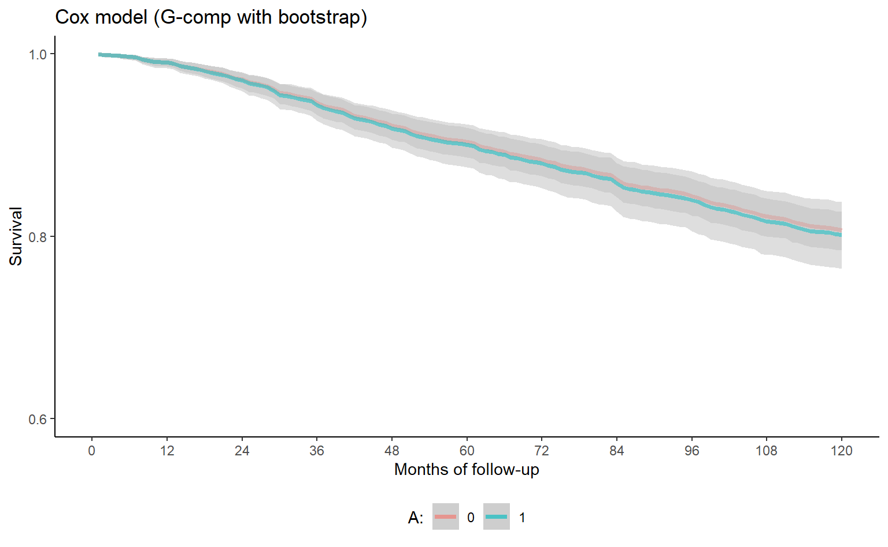
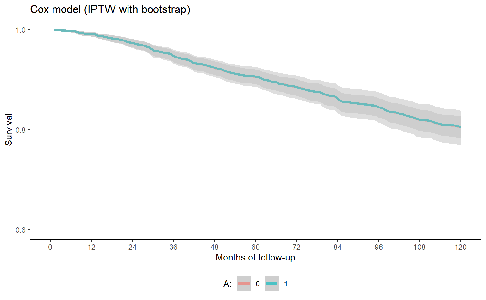
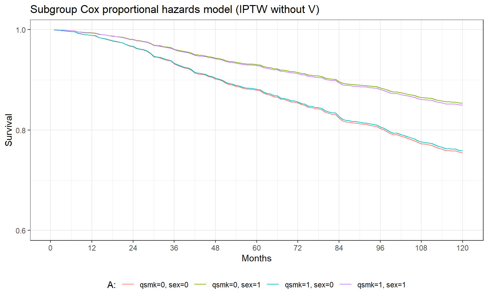
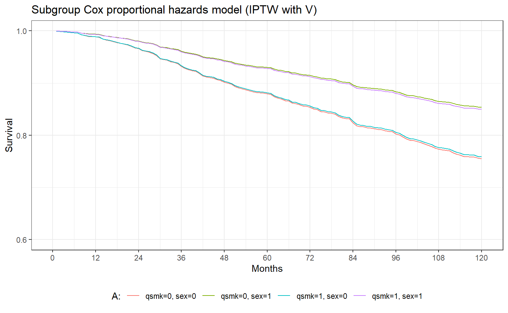

library(readxl)
library(ggplot2)
library(tidybayes)
library(boot)
library(dplyr)
library(splitstackshape)
library(survival)
library(survminer)
library(ggplot2)
library(marginaleffects)
nhefs <- read_excel("NHEFS.xls")Causal survival analysis in R
1 Introduction
In this notebook, we demonstrate various flavors of non-, semi- and parametric survival analysis from a causal, potential outcomes approach in R. We mostly follow Hernán & Robins (2020).
Specifically, we’ll cover:
- G-computation with logistic polynomial regression
- G-computation with Cox proportional hazards model
- Inverse probability of treatment weighting in logistic regression
- Inverse probability of treatment weighting in Cox proportional hazards model
- Inverse probability of treatment weighting in Kaplan-Meier
- Sub-group analysis with g-computation and logistic polynomial regression [NB: needs bootstrapping]
- Sub-group analysis with IP weighted Kaplan-Meier
- Sub-group analysis with IP weighted Cox proportional hazards model [NB: needs bootstrapping]
The dataset is nhefs containing data from the National Health and Nutrition Examination Survey Data I Epidemiologic Follow-up Study.
2 Set-up
3 Data wrangling: From wide to long
# 120 months, because the follow-up period was ten years (10yrs*12 months)
# yrdth ranges from 83 to 92
nhefs$survtime <- ifelse(nhefs$death==0, 120,
(nhefs$yrdth-83)*12+nhefs$modth)
nhefs.surv <- expandRows(nhefs, "survtime", drop=F)
nhefs.surv$time <- sequence(rle(nhefs.surv$seqn)$lengths)-1
nhefs.surv$event <- ifelse(nhefs.surv$time==nhefs.surv$survtime-1 &
nhefs.surv$death==1, 1, 0)
nhefs.surv$timesq <- nhefs.surv$time^2
# set id column
nhefs.surv$id <- nhefs.surv$seqn
# set number of iterations to bootstrap (high values are computationally intensive)
n_R <- 1e34 G-computation
4.1 Logistic regression
gcomp_logistic <- function(formula, sample, data, indices) {
# length of final follow-up in sample
tmax <- max(data$time, na.rm=T) + 1
# bootstrap individuals
id <- unique(data$id)
random_id <- sample(id, length(id), replace = TRUE)
d <- data |>
filter(id %in% random_id)
# covariate-adjusted logistic regression
mod <- glm(formula, family=binomial(), data=d)
# creation of dataset with all time points for
# each individual under each treatment level.
# predictions are obtained for the full sample,
# i.e. post-stratification to the sample of interest.
qsmk0 <- expandRows(sample, count=tmax, count.is.col=F)
qsmk0$time <- rep(seq(0, tmax-1), nrow(sample))
qsmk0$timesq <- qsmk0$time^2
qsmk0$qsmk <- 0
qsmk1 <- qsmk0
qsmk1$qsmk <- 1
# predicted probabilities
qsmk0$p.noevent0 <- predict(mod, qsmk0, type="response")
qsmk1$p.noevent1 <- predict(mod, qsmk1, type="response")
# computation of survival for each person-month
qsmk0.surv <- qsmk0 |> group_by(seqn) |> mutate(surv0 = cumprod(p.noevent0))
qsmk1.surv <- qsmk1 |> group_by(seqn) |> mutate(surv1 = cumprod(p.noevent1))
# marginalize
surv0 <-
aggregate(qsmk0.surv,
by = list(qsmk0.surv$time),
FUN = mean)[c("qsmk", "time", "surv0")]
surv1 <-
aggregate(qsmk1.surv,
by = list(qsmk1.surv$time),
FUN = mean)[c("qsmk", "time", "surv1")]
return(c(surv0$surv0, surv1$surv1))
}
# g-comp bootstrap
(bootstrapped_results <- boot(data=nhefs.surv,
sample = nhefs,
statistic=gcomp_logistic,
R=n_R,
formula=event==0 ~ qsmk + I(qsmk*time) + I(qsmk*timesq)
+ time + timesq + sex + race + age + I(age*age)
+ as.factor(education) + smokeintensity
+ I(smokeintensity*smokeintensity) + smkintensity82_71
+ smokeyrs + I(smokeyrs*smokeyrs) + as.factor(exercise)
+ as.factor(active) + wt71 + I(wt71*wt71)))
# data wrangle for plotting
tmin <- min(nhefs.surv$time, na.rm=T)
tmax <- max(nhefs.surv$time, na.rm=T)
# collect results in data frame
boot_samples <- with(
bootstrapped_results,
data.frame(
time = rep(tmin:tmax, each=R),
surv0 = c(t[,(tmin+1):(tmax+1)]),
surv1 = c(t[,(tmax+2):(tmax*2+2)]),
draw = rep(1:R, each=tmax+1))
)# survival curves
survival_plot <- ggplot(boot_samples, aes(x=time, y=surv)) +
stat_lineribbon(aes(y = surv0, colour = "0"), fill = "grey", alpha = 0.5, .width=.95) +
stat_lineribbon(aes(y = surv1, colour = "1"), fill = "grey", alpha = 0.5, .width=.95) +
xlab("Months of follow-up") +
scale_x_continuous(limits = c(0, 120), breaks=seq(0,120,12)) +
scale_y_continuous(limits=c(0.6, 1), breaks=seq(0.6, 1, 0.2)) +
ylab("Survival") +
ggtitle("Logistic polynomial model (g-computation)") +
labs(colour="A:") +
theme_classic() +
theme(legend.position="bottom")
# contrast survival curve
boot_samples$survdiff <- with(boot_samples,
surv1 - surv0)
contrast_plot <-
ggplot(boot_samples, aes(x=time, y=(survdiff)*100)) +
stat_lineribbon(fill = "grey", alpha = 0.5, .width=.95) +
scale_x_continuous(limits = c(0, 120), breaks=seq(0,120,20)) +
xlab("Months of follow-up") +
geom_hline(aes(yintercept = 0), linetype = 'dotted', alpha = 0.9) +
ylab("Difference in %") +
ggtitle("Percentage difference\nin survival") +
labs(colour="A:") +
theme_classic() +
theme(legend.position="bottom")
# Add the second plot as an annotation to the first plot
survival_plot + annotation_custom(grob = ggplotGrob(contrast_plot),
xmin = 0, xmax = 60,
ymin = 0.6, ymax = 0.8)4.2 Summary
It’s useful to take stock and compare these – and subsequent – results to those obtained by Hernán and Robins (2020) on the same data. They write (p. 231):
In our example, the survival curve under treatment was lower than the curve under no treatment during the entire follow-up, but the maximum difference never exceeded \(−2.0\%\) (\(95%\) confidence interval from \(−5.6\%\) to \(1.8\%\)). The 120- month survival estimates were \(80.4\%\) under smoking cessation and \(80.6\%\) under no smoking cessation; difference \(0.2\%\) (\(95\%\) confidence interval from \(−4.6\%\) to \(4.1\%\)). That is, after adjustment for the covariates \(L\) via standardization, we found little evidence of an effect of smoking cessation on mortality at any time during the follow-up. Note that the survival curves estimated via IP weighting (previous section) and the parametric g-formula (this section) are similar but not identical because they rely on different parametric assumptions: the IP weighted estimates require no misspecification of a model for treatment and a model for the unconditional hazards; the parametric g-formula estimates require no misspecification of a model for the conditional hazards.
4.3 Cox regression
# set event and id columns
nhefs$event <- nhefs$death
nhefs$id <- nhefs$seqn
gcomp_cox <- function(formula, data, indices) {
d <- data[indices,]
# fit adjusted Cox model
mod <- coxph(formula, data = d, model = TRUE)
# predict and marginalize
fit_qsmk0 <- avg_predictions(mod, newdata = transform(data, qsmk=0),
variables = list(survtime = sort(unique(data$survtime))),
vcov = FALSE, type = "survival")
# predict and marginalize
fit_qsmk1 <- avg_predictions(mod, newdata = transform(data, qsmk=1),
variables = list(survtime = sort(unique(data$survtime))),
vcov = FALSE, type = "survival")
# collect
fit_qsmk0$surv0 <- fit_qsmk0$estimate
fit_qsmk1$surv1 <- fit_qsmk1$estimate
return(c(fit_qsmk0$surv0, fit_qsmk1$surv1))
}
# g-comp Cox bootstrap
(bootstrapped_results <- boot(data=nhefs,
statistic=gcomp_cox,
R=n_R,
formula = Surv(survtime, event) ~ qsmk + sex + race + age + age:age
+ as.factor(education) + smokeintensity
+ smokeintensity:smokeintensity + smkintensity82_71
+ smokeyrs + smokeyrs:smokeyrs + as.factor(exercise)
+ as.factor(active) + wt71 + wt71:wt71))
# data wrangle for plotting
time_seq <- sort(unique(nhefs$survtime))
tmin <- min(time_seq)
tmax <- length(time_seq)
# collect results in data frame
boot_samples <- with(
bootstrapped_results,
data.frame(
time = rep(time_seq, each=R),
surv0 = c(t[,(tmin):(tmax)]),
surv1 = c(t[,(tmax+1):(tmax*2)]),
draw = rep(1:R, each=tmax))
)# survival curves
(survival_plot <- ggplot(boot_samples, aes(x=time, y=surv)) +
stat_lineribbon(aes(y = surv0, colour = "0"), fill = "grey", alpha = 0.5, .width=.95) +
stat_lineribbon(aes(y = surv1, colour = "1"), fill = "grey", alpha = 0.5, .width=.95) +
xlab("Months of follow-up") +
scale_x_continuous(limits = c(0, 120), breaks=seq(0,120,12)) +
scale_y_continuous(limits=c(0.6, 1), breaks=seq(0.6, 1, 0.2)) +
ylab("Survival") +
ggtitle("Cox model (G-comp with bootstrap)") +
labs(colour="A:") +
theme_classic() +
theme(legend.position="bottom"))
5 Inverse probability of treatment weighting
5.1 Logistic regression
# set event and id columns
nhefs$event <- nhefs$death
nhefs$id <- nhefs$seqn
iptw_logistic <- function(formula, data, indices) {
# length of final follow-up in sample
tmax <- max(data$survtime, na.rm=T)
# bootstrap individuals
id <- unique(data$id)
random_id <- sample(id, length(id), replace = TRUE)
d <- data |>
filter(id %in% random_id)
# estimation of denominator of ip weights
p.denom <- glm(formula, family=binomial(), data=d)
d$pd.qsmk <- predict(p.denom, d, type="response")
# estimation of numerator of ip weights
p.num <- glm(qsmk ~ 1, data=d, family=binomial())
d$pn.qsmk <- predict(p.num, d, type="response")
# computation of estimated weights
d$sw.a <- ifelse(d$qsmk==1, d$pn.qsmk/d$pd.qsmk,
(1-d$pn.qsmk)/(1-d$pd.qsmk))
# creation of person-month data
d.iptw <- expandRows(d, "survtime", drop=F)
d.iptw$time <- sequence(rle(d.iptw$id)$lengths)-1
d.iptw$event <- ifelse(d.iptw$time==d.iptw$survtime-1 &
d.iptw$event==1, 1, 0)
d.iptw$timesq <- d.iptw$time^2
# fit weighted polynomial logistic model
ipw.model <- glm(event==0 ~ qsmk + I(qsmk*time) + I(qsmk*timesq) +
time + timesq, family=binomial(), weight=sw.a,
data=d.iptw)
# creation of survival curves
ipw.qsmk0 <- data.frame(cbind(seq(0, tmax-1),0,(seq(0, tmax-1))^2))
ipw.qsmk1 <- data.frame(cbind(seq(0, tmax-1),1,(seq(0, tmax-1))^2))
colnames(ipw.qsmk0) <- c("time", "qsmk", "timesq")
colnames(ipw.qsmk1) <- c("time", "qsmk", "timesq")
# assignment of estimated (1-hazard) to each person-month */
ipw.qsmk0$p.noevent0 <- predict(ipw.model, ipw.qsmk0, type="response")
ipw.qsmk1$p.noevent1 <- predict(ipw.model, ipw.qsmk1, type="response")
# computation of survival for each person-month
ipw.qsmk0$surv0 <- cumprod(ipw.qsmk0$p.noevent0)
ipw.qsmk1$surv1 <- cumprod(ipw.qsmk1$p.noevent1)
return(c(ipw.qsmk0$surv0, ipw.qsmk1$surv1))
}
# iptw bootstrap
(bootstrapped_results <- boot(data=nhefs,
statistic=iptw_logistic,
R=n_R,
formula=qsmk ~ sex + race + age + I(age*age) + as.factor(education)
+ smokeintensity + I(smokeintensity*smokeintensity)
+ smokeyrs + I(smokeyrs*smokeyrs) + as.factor(exercise)
+ as.factor(active) + wt71 + I(wt71*wt71)))
# data wrangle for plotting
tmin <- min(nhefs.surv$time, na.rm=T)
tmax <- max(nhefs.surv$time, na.rm=T)
# collect results in data frame
boot_samples <- with(
bootstrapped_results,
data.frame(
time = rep(tmin:tmax, each=R),
surv0 = c(t[,(tmin+1):(tmax+1)]),
surv1 = c(t[,(tmax+2):(tmax*2+2)]),
draw = rep(1:R, each=tmax+1))
)# plot
(survival_plot <- ggplot(boot_samples, aes(x=time, y=surv)) +
stat_lineribbon(aes(y = surv0, colour = "0"), fill = "grey", alpha = 0.5, .width=.95) +
stat_lineribbon(aes(y = surv1, colour = "1"), fill = "grey", alpha = 0.5, .width=.95) +
xlab("Months of follow-up") +
scale_x_continuous(limits = c(0, 120), breaks=seq(0,120,12)) +
scale_y_continuous(limits=c(0.6, 1), breaks=seq(0.6, 1, 0.2)) +
ylab("Survival") +
ggtitle("Logistic polynomial model (IPTW)") +
labs(colour="A:") +
theme_bw() +
theme(legend.position="bottom"))
5.2 Cox regression
NB: This gives a slightly different result from the other approaches – namely, that there’s no notable difference between qsmk = 1 and qsmk = 0 when balancing the groups with IP weights.
I’ve tried to debug the code but without success. We can check that the post-processing code is working as intended by deleting the weights argument from the Cox model; then, we see a clear difference between the two groups.
This could indicate that, when the hazard is constrained to be proportional, we find little evidence of a difference between the two groups. This would be sort of consistent with the IP weighted Kaplan-Meier below.
# set event and id columns
nhefs$event <- nhefs$death
nhefs$id <- nhefs$seqn
iptw_cox <- function(formula, data, indices) {
d <- data[indices,]
# estimation of denominator of ip weights
p.denom <- glm(formula, family=binomial(), data=d)
d$pd.qsmk <- predict(p.denom, d, type="response")
# estimation of numerator of ip weights
p.num <- glm(qsmk ~ 1, data=d, family=binomial())
d$pn.qsmk <- predict(p.num, d, type="response")
# computation of estimated weights
d$sw.a <- ifelse(d$qsmk==1, d$pn.qsmk/d$pd.qsmk,
(1-d$pn.qsmk)/(1-d$pd.qsmk))
# fit of weighted Cox model
mod <- coxph(Surv(survtime, event) ~ qsmk, weights = d$sw.a, data = d, model = TRUE)
# predict
iptw_fit_qsmk0 <- avg_predictions(mod, newdata = transform(data, qsmk=0),
variables = list(survtime = sort(unique(data$survtime))),
vcov = FALSE, # don't compute SEs with delta method
type = "survival")
# predict
iptw_fit_qsmk1 <- avg_predictions(mod, newdata = transform(data, qsmk=1),
variables = list(survtime = sort(unique(data$survtime))),
vcov = FALSE, # don't compute SEs with delta method
type = "survival")
# collect
iptw_fit_qsmk0$surv0 <- iptw_fit_qsmk0$estimate
iptw_fit_qsmk1$surv1 <- iptw_fit_qsmk1$estimate
return(c(iptw_fit_qsmk0$surv0, iptw_fit_qsmk1$surv1))
}
# iptw Cox bootstrap
(bootstrapped_results <- boot(data=nhefs,
statistic=iptw_cox,
R=n_R,
formula = qsmk ~ sex + race + age + I(age * age) + as.factor(education)
+ smokeintensity + I(smokeintensity * smokeintensity)
+ smokeyrs + I(smokeyrs * smokeyrs) + as.factor(exercise)
+ as.factor(active) + wt71 + I(wt71 * wt71)))
# data wrangle for plotting
time_seq <- sort(unique(nhefs$survtime))
tmin <- min(time_seq)
tmax <- length(time_seq)
# collect results
boot_samples <- with(
bootstrapped_results,
data.frame(
time = rep(time_seq, each=R),
surv0 = c(t[,(tmin):(tmax)]),
surv1 = c(t[,(tmax+1):(tmax*2)]),
draw = rep(1:R, each=tmax))
)# survival curves
(survival_plot <- ggplot(boot_samples, aes(x=time, y=surv)) +
stat_lineribbon(aes(y = surv0, colour = "0"), fill = "grey", alpha = 0.5, .width=.95) +
stat_lineribbon(aes(y = surv1, colour = "1"), fill = "grey", alpha = 0.5, .width=.95) +
xlab("Months of follow-up") +
scale_x_continuous(limits = c(0, 120), breaks=seq(0,120,12)) +
scale_y_continuous(limits=c(0.6, 1), breaks=seq(0.6, 1, 0.2)) +
ylab("Survival") +
ggtitle("Cox model (IPTW with bootstrap)") +
labs(colour="A:") +
theme_classic() +
theme(legend.position="bottom"))
6 Kaplan-Meier
6.1 Unadjusted
# no weights
npfit <- survfit(Surv(survtime, event) ~ qsmk, data=nhefs)
# create plot
npplot <- ggsurvplot(npfit, data = nhefs, xlab="Months of follow-up",
ylab="Survival probability",
main="Product-Limit Survival Estimates", conf.int = TRUE)
# extract plot
npplot$plot + scale_x_continuous(limits = c(0, 120), breaks=seq(0,120,12)) +
scale_y_continuous(limits=c(0.6, 1), breaks=seq(0.6, 1, 0.2)) +
theme(legend.position="bottom") +
ggtitle("Kaplan-Meier (unadjusted)")6.2 IP weighted
# we re-use weights from earlier
npfit <- survfit(Surv(survtime, event) ~ qsmk, weights = d$sw.a, data=d)
# create plot
npplot <- ggsurvplot(npfit, data = nhefs, xlab="Months of follow-up",
ylab="Survival probability",
main="Product-Limit Survival Estimates", conf.int = TRUE)
# extract plot
npplot$plot + scale_x_continuous(limits = c(0, 120), breaks=seq(0,120,12)) +
scale_y_continuous(limits=c(0.6, 1), breaks=seq(0.6, 1, 0.2)) +
theme(legend.position="bottom") +
ggtitle("Kaplan-Meier (IPTW)")7 Sub-group analysis
7.1 G-computation
Let’s say we’re interested in assessing whether the effect of qsmk differs by sex.
# set-up data frame -- easier for converting to bootstrapping later
d <- nhefs.surv
sample <- nhefs
tmax <- max(d$time, na.rm=T) + 1
# covariate-adjusted logistic regression
# only new thing is that we include an interaction term for qsmk*sex
mod <- glm(event==0 ~ qsmk + I(qsmk*sex) + I(qsmk*time) + I(qsmk*timesq)
+ time + timesq + sex + race + age + I(age*age)
+ as.factor(education) + smokeintensity
+ I(smokeintensity*smokeintensity) + smkintensity82_71
+ smokeyrs + I(smokeyrs*smokeyrs) + as.factor(exercise)
+ as.factor(active) + wt71 + I(wt71*wt71),
family=binomial(), data=d)
# creation of dataset with all time points for
# each individual under each treatment level.
# predictions are obtained for the full sample,
# i.e. post-stratification to the sample of interest.
qsmk0 <- expandRows(sample, count=tmax, count.is.col=F)
qsmk0$time <- rep(seq(0, tmax-1), nrow(sample))
qsmk0$timesq <- qsmk0$time^2
qsmk1 <- qsmk0
qsmk1$qsmk <- 1
# qsmk = 0, sex = 0
q0s0 <- qsmk0
q0s0$sex <- 0
# qsmk = 0, sex = 1
q0s1 <- qsmk0
q0s1$sex <- 1
# qsmk = 1, sex = 0
q1s0 <- qsmk1
q1s0$sex <- 0
# qsmk = 1, sex = 1
q1s1 <- qsmk1
q1s1$sex <- 1
# predicted probabilities for each strata and condition
q0s0$p.noevent0 <- predict(mod, q0s0, type="response")
q0s1$p.noevent0 <- predict(mod, q0s1, type="response")
q1s0$p.noevent0 <- predict(mod, q1s0, type="response")
q1s1$p.noevent0 <- predict(mod, q1s1, type="response")
# computation of survival for each person-month
q0s0.surv <- q0s0 |> group_by(seqn) |> mutate(surv = cumprod(p.noevent0))
q0s1.surv <- q0s1 |> group_by(seqn) |> mutate(surv = cumprod(p.noevent0))
q1s0.surv <- q1s0 |> group_by(seqn) |> mutate(surv = cumprod(p.noevent0))
q1s1.surv <- q1s1 |> group_by(seqn) |> mutate(surv = cumprod(p.noevent0))
# marginalize
surv00 <-
aggregate(q0s0.surv,
by = list(q0s0.surv$time),
FUN = mean)[c("qsmk", "time", "surv")]
surv01 <-
aggregate(q0s1.surv,
by = list(q0s1.surv$time),
FUN = mean)[c("qsmk", "time", "surv")]
surv10 <-
aggregate(q1s0.surv,
by = list(q1s0.surv$time),
FUN = mean)[c("qsmk", "time", "surv")]
surv11 <-
aggregate(q1s1.surv,
by = list(q1s1.surv$time),
FUN = mean)[c("qsmk", "time", "surv")]
# data wrangle for plotting
subgroup_surv <- data.frame(
time = surv00$time,
surv00 = surv00$surv,
surv01 = surv01$surv,
surv10 = surv10$surv,
surv11 = surv11$surv
)ggplot(subgroup_surv, aes(x=time, y=surv)) +
geom_line(aes(y = surv00, colour = "1")) +
geom_line(aes(y = surv01, colour = "2")) +
geom_line(aes(y = surv10, colour = "3")) +
geom_line(aes(y = surv11, colour = "4")) +
scale_x_continuous(limits = c(0, 120), breaks=seq(0,120,12)) +
scale_y_continuous(limits=c(0.6, 1), breaks=seq(0.6, 1, 0.2)) +
xlab("Months") +
ylab("Survival") +
ggtitle("Subgroup logistic polynomial model (g-computation)") +
labs(colour="A:") +
scale_color_hue(labels = c("qsmk=0, sex=0", "qsmk=0, sex=1",
"qsmk=1, sex=0", "qsmk=1, sex=1")) +
theme_bw() +
theme(legend.position="bottom")7.2 Kaplan-Meier
Let’s compare our g-computation results with IP weighted Kaplan-Meier. Now, for subgroup analysis with IPTW, there are a few subtleties. Hernán and Robins (2020:165-166) write:
Marginal structural models do not include covariates when the target parameter is the average causal effect in the population. However, one may include covariates — which may be non-confounders — in a marginal structural model to assess effect modification. the effect estimates. In most settings, the vector of covariates \(L\) should include \(V\). Even when \(V\) and \(A\) are independent given the other components of \(L\) and \(V\) is not needed to ensure exchangeability, including \(V\) in \(L\) will generally increase the efficiency with which the parameters of the marginal structural model are estimated.
They continue:
Because we are considering a model for the effect of treatment within levels of \(V\), we now have the choice to use either \(f[A]\) or \(f[A|V]\) in the numerator of the stabilized weights. IP weighting based on the stabilized weights \(SW^A(V) = \frac{f[A|V]} {f[A|L]}\) generally results in narrower confidence intervals around the effect estimates. Some intuition for the generally increased statistical efficiency of \(SW^A (V)\) is that the variance of the weights \(SW^A(V)\) is less than that of the weights \(SW^A\). We estimate \(SW^A (V)\) using the same approach as for \(SW^A\), except that we add the covariate \(V\) to the logistic model for the numerator of the weights.
We’ll try both approaches – they give identical results in our case, perhaps due to the non-parametric nature of the Kaplan-Meier estimator?
Stabilized weights without \(V\)
# we re-use weights from earlier
nhefs$event <- nhefs$death
nhefs$id <- nhefs$seqn
d <- nhefs
# estimation of denominator of ip weights -- nothing new here
p.denom <- glm(qsmk ~ as.factor(sex) + race + age + I(age*age) + as.factor(education)
+ smokeintensity + I(smokeintensity*smokeintensity)
+ smokeyrs + I(smokeyrs*smokeyrs) + as.factor(exercise)
+ as.factor(active) + wt71 + I(wt71*wt71), family=binomial(), data=d)
d$pd.qsmk <- predict(p.denom, d, type="response")
# estimation of numerator of ip weights -- nothing new here
p.num <- glm(qsmk ~ 1, data=d, family=binomial())
d$pn.qsmk <- predict(p.num, d, type="response")
# computation of estimated weights
d$sw.a <- ifelse(d$qsmk==1, d$pn.qsmk/d$pd.qsmk,
(1-d$pn.qsmk)/(1-d$pd.qsmk))
# only new thing is that we add sex to the weighted model
npfit <- survfit(Surv(survtime, event) ~ qsmk + as.factor(sex) + I(qsmk*sex), weights = d$sw.a, data=d)
# create plot
npplot <- ggsurvplot(npfit, data = nhefs, xlab="Months of follow-up",
ylab="Survival probability",
main="Product-Limit Survival Estimates", conf.int = TRUE)
# extract plot
npplot$plot + scale_x_continuous(limits = c(0, 120), breaks=seq(0,120,12)) +
scale_y_continuous(limits=c(0.6, 1), breaks=seq(0.6, 1, 0.2)) +
theme(legend.position="bottom") +
ggtitle("Subgroup Kaplan-Meier (IPTW without V)")Stabilized weights with \(V\)
# we compute new weights
nhefs$event <- nhefs$death
nhefs$id <- nhefs$seqn
d <- nhefs
# estimation of denominator of ip weights
p.denom <- glm(qsmk ~ as.factor(sex) + race + age + I(age*age) + as.factor(education)
+ smokeintensity + I(smokeintensity*smokeintensity)
+ smokeyrs + I(smokeyrs*smokeyrs) + as.factor(exercise)
+ as.factor(active) + wt71 + I(wt71*wt71), family=binomial(), data=d)
d$pd.qsmk <- predict(p.denom, d, type="response")
# estimation of numerator of ip weights
# new thing is that we add sex to the numerator model
p.num <- glm(qsmk ~ as.factor(sex), data=d, family=binomial())
d$pn.qsmk <- predict(p.num, d, type="response")
# computation of estimated weights
d$sw.aV <- ifelse(d$qsmk==1, d$pn.qsmk/d$pd.qsmk,
(1-d$pn.qsmk)/(1-d$pd.qsmk))
# IP weighted Kaplan-Meier
npfit_V <- survfit(Surv(survtime, event) ~ qsmk + sex + I(qsmk*sex), weights = d$sw.aV, data=d)
# create plot
npVplot <- ggsurvplot(npfit_V, data = nhefs, xlab="Months of follow-up",
ylab="Survival probability",
main="Product-Limit Survival Estimates", conf.int = TRUE)
# extract plot
npVplot$plot + scale_x_continuous(limits = c(0, 120), breaks=seq(0,120,12)) +
scale_y_continuous(limits=c(0.6, 1), breaks=seq(0.6, 1, 0.2)) +
theme(legend.position="bottom") +
ggtitle("Subgroup Kaplan-Meier (IPTW with V)")7.3 Cox regression
We can also run IP weighted subgroup analysis with Cox regression to assess whether this yields another result than the Kaplan-Meier estimate. As it turns out, in these data and models, it appears to make no difference whether we use \(SW^A\) or \(SW^A (V)\).
Stabilized weights without \(V\)
nhefs$event <- nhefs$death
nhefs$id <- nhefs$seqn
d <- nhefs
# estimation of denominator of ip weights
p.denom <- glm(qsmk ~ sex + race + age + I(age*age) + as.factor(education)
+ smokeintensity + I(smokeintensity*smokeintensity)
+ smokeyrs + I(smokeyrs*smokeyrs) + as.factor(exercise)
+ as.factor(active) + wt71 + I(wt71*wt71), family=binomial(), data=d)
d$pd.qsmk <- predict(p.denom, d, type="response")
# estimation of numerator of ip weights
p.num <- glm(qsmk ~ 1, data=d, family=binomial())
d$pn.qsmk <- predict(p.num, d, type="response")
# computation of estimated weights
d$sw.a <- ifelse(d$qsmk==1, d$pn.qsmk/d$pd.qsmk,
(1-d$pn.qsmk)/(1-d$pd.qsmk))
# fit of weighted Cox model
mod <- coxph(Surv(survtime, event) ~ qsmk*sex, weights = d$sw.a, data = d)
# wrangle for plotting
ipw.qsmk00 <- data.frame(qsmk=0,sex=0)
ipw.qsmk01 <- data.frame(qsmk=0,sex=1)
ipw.qsmk10 <- data.frame(qsmk=1,sex=0)
ipw.qsmk11 <- data.frame(qsmk=1,sex=1)
iptw_fit_qsmk00 <- survfit(mod, newdata = ipw.qsmk00)
iptw_fit_qsmk01 <- survfit(mod, newdata = ipw.qsmk01)
iptw_fit_qsmk10 <- survfit(mod, newdata = ipw.qsmk10)
iptw_fit_qsmk11 <- survfit(mod, newdata = ipw.qsmk11)
subgroup_iptw_surv <- data.frame(time = iptw_fit_qsmk00$time,
surv00 = iptw_fit_qsmk00$surv,
surv01 = iptw_fit_qsmk01$surv,
surv10 = iptw_fit_qsmk10$surv,
surv11 = iptw_fit_qsmk11$surv)ggplot(subgroup_iptw_surv, aes(x=time, y=surv)) +
geom_line(aes(y = surv00, colour = "1")) +
geom_line(aes(y = surv01, colour = "2")) +
geom_line(aes(y = surv10, colour = "3")) +
geom_line(aes(y = surv11, colour = "4")) +
scale_x_continuous(limits = c(0, 120), breaks=seq(0,120,12)) +
scale_y_continuous(limits=c(0.6, 1), breaks=seq(0.6, 1, 0.2)) +
xlab("Months") +
ylab("Survival") +
ggtitle("Subgroup Cox proportional hazards model (IPTW without V)") +
labs(colour="A:") +
scale_color_hue(labels = c("qsmk=0, sex=0", "qsmk=0, sex=1",
"qsmk=1, sex=0", "qsmk=1, sex=1")) +
theme_bw() +
theme(legend.position="bottom")
Stabilized weights with \(V\)
nhefs$event <- nhefs$death
nhefs$id <- nhefs$seqn
d <- nhefs
# estimation of denominator of ip weights
p.denom <- glm(qsmk ~ sex + race + age + I(age*age) + as.factor(education)
+ smokeintensity + I(smokeintensity*smokeintensity)
+ smokeyrs + I(smokeyrs*smokeyrs) + as.factor(exercise)
+ as.factor(active) + wt71 + I(wt71*wt71), family=binomial(), data=d)
d$pd.qsmk <- predict(p.denom, d, type="response")
# estimation of numerator of ip weights
p.num <- glm(qsmk ~ sex, data=d, family=binomial())
d$pn.qsmk <- predict(p.num, d, type="response")
# computation of estimated weights
d$sw.aV <- ifelse(d$qsmk==1, d$pn.qsmk/d$pd.qsmk,
(1-d$pn.qsmk)/(1-d$pd.qsmk))
# fit of weighted Cox model
mod <- coxph(Surv(survtime, event) ~ qsmk*sex, weights = d$sw.aV, data = d)
# wrangle for plotting
ipw.qsmk00 <- data.frame(qsmk=0,sex=0)
ipw.qsmk01 <- data.frame(qsmk=0,sex=1)
ipw.qsmk10 <- data.frame(qsmk=1,sex=0)
ipw.qsmk11 <- data.frame(qsmk=1,sex=1)
iptw_fit_qsmk00 <- survfit(mod, newdata = ipw.qsmk00)
iptw_fit_qsmk01 <- survfit(mod, newdata = ipw.qsmk01)
iptw_fit_qsmk10 <- survfit(mod, newdata = ipw.qsmk10)
iptw_fit_qsmk11 <- survfit(mod, newdata = ipw.qsmk11)
subgroup_iptw_surv <- data.frame(time = iptw_fit_qsmk00$time,
surv00 = iptw_fit_qsmk00$surv,
surv01 = iptw_fit_qsmk01$surv,
surv10 = iptw_fit_qsmk10$surv,
surv11 = iptw_fit_qsmk11$surv)ggplot(subgroup_iptw_surv, aes(x=time, y=surv)) +
geom_line(aes(y = surv00, colour = "1")) +
geom_line(aes(y = surv01, colour = "2")) +
geom_line(aes(y = surv10, colour = "3")) +
geom_line(aes(y = surv11, colour = "4")) +
scale_x_continuous(limits = c(0, 120), breaks=seq(0,120,12)) +
scale_y_continuous(limits=c(0.6, 1), breaks=seq(0.6, 1, 0.2)) +
xlab("Months") +
ylab("Survival") +
ggtitle("Subgroup Cox proportional hazards model (IPTW with V)") +
labs(colour="A:") +
scale_color_hue(labels = c("qsmk=0, sex=0", "qsmk=0, sex=1",
"qsmk=1, sex=0", "qsmk=1, sex=1")) +
theme_bw() +
theme(legend.position="bottom")
8 Bonus: Visualizing IPTW “pseudo-population”
The IPTW method is often described as achieving balance between comparison groups by creating a “pseudo-population” in which the probability of receiving either intervention is comparable (or, at least more comparable than pre-weighting). This term – pseudo-population – might not, however, be immediately intuitive, so here we visualize what weighting does in practice. Code from: https://www.andrewheiss.com/blog/2021/12/18/bayesian-propensity-scores-weights/#pseudo-populations
Notice how the propensities in the pseudo-population (right panel, lighter colors) is re-allocated such that the two distributions are more similar: the treated are shifted left while the untreated are shifted slightly right.
library(MetBrewer)
library(patchwork)
isfahan <- MetBrewer::met.brewer("Isfahan1")
# create weights - as above
nhefs$event <- nhefs$death
nhefs$id <- nhefs$seqn
d <- nhefs
# estimation of denominator of ip weights
p.denom <- glm(qsmk ~ sex + race + age + I(age*age) + as.factor(education)
+ smokeintensity + I(smokeintensity*smokeintensity)
+ smokeyrs + I(smokeyrs*smokeyrs) + as.factor(exercise)
+ as.factor(active) + wt71 + I(wt71*wt71), family=binomial(), data=d)
d$pd.qsmk <- predict(p.denom, d, type="response")
# estimation of numerator of ip weights
p.num <- glm(qsmk ~ 1, data=d, family=binomial())
d$pn.qsmk <- predict(p.num, d, type="response")
# computation of estimated weights
d$sw.a <- ifelse(d$qsmk==1, d$pn.qsmk/d$pd.qsmk,
(1-d$pn.qsmk)/(1-d$pd.qsmk))
# unweighted
p_unw <- ggplot() +
geom_histogram(data = filter(d, qsmk == 1),
bins = 50, aes(x = pd.qsmk),
fill = isfahan[2]) +
geom_histogram(data = filter(d, qsmk == 0),
bins = 50, aes(x = pd.qsmk, y = -after_stat(count)),
fill = isfahan[6]) +
geom_hline(yintercept = 0) +
annotate(geom = "label", x = 0.8, y = 20, label = "Quitters (actual)",
fill = isfahan[2], color = "white", hjust = 1) +
annotate(geom = "label", x = 0.8, y = -50, label = "Non-quitters (actual)",
fill = isfahan[6], color = "white", hjust = 1) +
geom_hline(yintercept = 0, color = "white", linewidth = 0.25) +
scale_y_continuous(label = abs) +
coord_cartesian(xlim = c(0.05, 1), ylim = c(-100, 40)) +
labs(x = "Propensity", y = "Count") +
ggtitle("Pre-weighting")
# weighted
p_w <- ggplot() +
geom_histogram(data = filter(d, qsmk == 1),
bins = 50, aes(x = pd.qsmk, weight = sw.a),
fill = colorspace::lighten(isfahan[2], 0.35)) +
geom_histogram(data = filter(d, qsmk == 0),
bins = 50, aes(x = pd.qsmk, weight = sw.a, y = -after_stat(count)),
fill = colorspace::lighten(isfahan[6], 0.35)) +
geom_histogram(data = filter(d, qsmk == 1),
bins = 50, aes(x = pd.qsmk),
fill = isfahan[2]) +
geom_histogram(data = filter(d, qsmk == 0),
bins = 50, aes(x = pd.qsmk, y = -after_stat(count)),
fill = isfahan[6]) +
annotate(geom = "label", x = 0.8, y = 20, label = "Quitters (actual)",
fill = isfahan[2], color = "white", hjust = 1) +
annotate(geom = "label", x = 1, y = 30, label = "Quitters (IPTW pseudo-population)",
fill = colorspace::lighten(isfahan[2], 0.35), color = "white", hjust = 1) +
annotate(geom = "label", x = 0.8, y = -50, label = "Non-quitters (actual)",
fill = isfahan[6], color = "white", hjust = 1) +
annotate(geom = "label", x = 1, y = -70, label = "Non-quitters (IPTW pseudo-population)",
fill = colorspace::lighten(isfahan[6], 0.35), color = "white", hjust = 1) +
geom_hline(yintercept = 0, color = "white", linewidth = 0.25) +
scale_y_continuous(label = abs) +
coord_cartesian(xlim = c(0.05, 1), ylim = c(-100, 40)) +
labs(x = "Propensity", y = "Count") +
ggtitle("Post-weighting")
p_unw + p_w8.1 Pre- and post-weighting Table 1
We can also assess what the weights do numerically by each covariate. Here, we assess the differences pre- and post-weighting, respectively. Note that the differences in the weighted table 1 are quite a lot smaller than the unweighted.
library("cobalt")
f <- formula(qsmk ~ sex + race + age + I(age*age) + as.factor(education)
+ smokeintensity + I(smokeintensity*smokeintensity)
+ smokeyrs + I(smokeyrs*smokeyrs) + as.factor(exercise)
+ as.factor(active) + wt71 + I(wt71*wt71))Unweighted
# not weighted
bal.tab(f, data = d)Balance Measures
Type Diff.Un
sex Binary -0.0858
race Binary -0.0586
age Contin. 0.3089
I(age * age) Contin. 0.3119
as.factor(education)_1 Binary 0.0358
as.factor(education)_2 Binary -0.0451
as.factor(education)_3 Binary -0.0290
as.factor(education)_4 Binary -0.0098
as.factor(education)_5 Binary 0.0481
smokeintensity Contin. -0.1999
I(smokeintensity * smokeintensity) Contin. -0.1259
smokeyrs Contin. 0.1895
I(smokeyrs * smokeyrs) Contin. 0.2122
as.factor(exercise)_0 Binary -0.0421
as.factor(exercise)_1 Binary 0.0099
as.factor(exercise)_2 Binary 0.0322
as.factor(active)_0 Binary -0.0302
as.factor(active)_1 Binary 0.0130
as.factor(active)_2 Binary 0.0172
wt71 Contin. 0.1354
I(wt71 * wt71) Contin. 0.1282
Sample sizes
Control Treated
All 1201 428Weighted
# weighted
bal.tab(f, data = d, weights = d$sw.a, s.d.denom=)Balance Measures
Type Diff.Adj
sex Binary -0.0010
race Binary 0.0025
age Contin. 0.0022
I(age * age) Contin. 0.0023
as.factor(education)_1 Binary -0.0093
as.factor(education)_2 Binary 0.0013
as.factor(education)_3 Binary 0.0011
as.factor(education)_4 Binary 0.0059
as.factor(education)_5 Binary 0.0009
smokeintensity Contin. -0.0226
I(smokeintensity * smokeintensity) Contin. -0.0254
smokeyrs Contin. -0.0040
I(smokeyrs * smokeyrs) Contin. -0.0013
as.factor(exercise)_0 Binary -0.0038
as.factor(exercise)_1 Binary 0.0188
as.factor(exercise)_2 Binary -0.0149
as.factor(active)_0 Binary -0.0064
as.factor(active)_1 Binary 0.0122
as.factor(active)_2 Binary -0.0058
wt71 Contin. 0.0019
I(wt71 * wt71) Contin. 0.0047
Effective sample sizes
Control Treated
Unadjusted 1201. 428.
Adjusted 1166.82 349.46